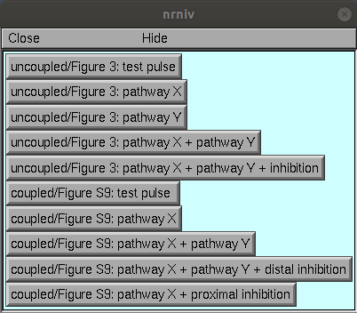
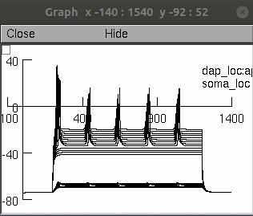
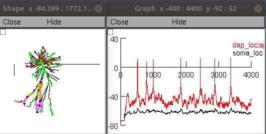
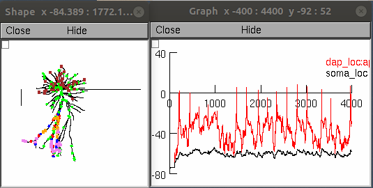

Model for "Dendritic action potentials and computation in human layer 2/3 cortical neurons" The model replicates Figure 3 and Supplementary 9.
Model usage:
This code was written in and requires NEURON (tested in version 7.4,
7.7) which is freely available
from http://www.neuron.yale.edu
This model was run under the unix/linux and windows 10 operating system.
Proceed as follows:
- Download and expand this archive and compile the mod files located in the "_mod" folder with nrnivmodl (nrnivmodl _mod/).
or for windows double click mosinit.hoc
If you need more help running NEURON on your platform please consult: https://senselab.med.yale.edu/ModelDB/NEURON_DwnldGuide Once the code is running you can select a simulation from a menu of buttons to click:  After each simulation is run you will need to restart to generate another simulation. As examples clicking the first, second, and fith buttons quickly generates these figures:   